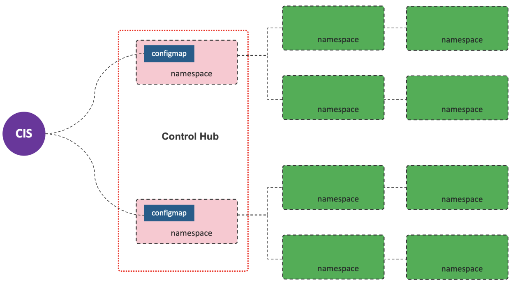

kubectl create secret generic bigip-login --from-literal=username=admin --from-literal=password=admin -n kube-system
kubectl create serviceaccount bigip-ctlr -n kube-system
kubectl create -f rbac.yaml
kubectl create -f cis.yamlF5 CIS Installation
Table of Contents
Installation
Install on kube-system
Install
Uninstall
cd install-on-kube-system/
kubectl delete -f cis.yaml
kubectl delete -f rbac.yaml
kubectl delete serviceaccount bigip-ctlr -n kube-system
kubectl delete secret bigip-login -n kube-systemInstall on bigip-ctlr
Install
kubectl create ns bigip-ctlr
kubectl create secret generic bigip-login --from-literal=username=admin --from-literal=password=admin -n bigip-ctlr
kubectl create serviceaccount bigip-ctlr -n bigip-ctlr
kubectl create -f rbac.yaml
kubectl create -f cis.yamlUninstall
cd install-on-bigip-ctlr/
kubectl delete -f cis.yaml
kubectl delete -f rbac.yaml
kubectl delete serviceaccount bigip-ctlr -n bigip-ctlr
kubectl delete secret bigip-login -n bigip-ctlr
kubectl delete ns bigip-ctlrlivenessProbe & readinessProbe
This page provide an example of CIS Pod with livenessProbe & readinessProbe.
-
Full Deployment YAML - cis-probe.yaml
Key Config
livenessProbe:
failureThreshold: 3
httpGet:
path: /health
port: 8080
scheme: HTTP
initialDelaySeconds: 15
periodSeconds: 15
successThreshold: 1
timeoutSeconds: 15
readinessProbe:
failureThreshold: 3
httpGet:
path: /health
port: 8080
scheme: HTTP
initialDelaySeconds: 30
periodSeconds: 30
successThreshold: 1
timeoutSeconds: 15VE 健壮性检测(curl)
-
Full Deployment YAML - cis-rhel.yaml
livenessProbe:
failureThreshold: 3
exec:
command:
- curl
- -k
- -s
- -o
- /dev/null
- https://192.168.200.208
initialDelaySeconds: 15
periodSeconds: 15
successThreshold: 1|
Note
|
curl 命令只存在于 Red Hat Linux Base 镜像中。
|
VE 健壮性检测(sh + python)
-
Full Deployment YAML - cis-debian.yaml
livenessProbe:
exec:
command:
- sh
- -c
- echo 'import requests' > /tmp/live.py ; echo 'response = requests.get("https://192.168.200.208", verify=False, timeout=3)' >> /tmp/live.py ; python -W ignore /tmp/live.py
initialDelaySeconds: 15
periodSeconds: 15
successThreshold: 1
failureThreshold: 3
timeoutSeconds: 5| timeoutSeconds | timeout | VE 重启过程 CIS Restart 次数 |
|---|---|---|
1 |
1 |
7 |
3 |
2 |
6 |
5 |
3 |
6 |
15 |
15 |
5 |
Integrate CIS with flannel （etcd mode, docker0 network）
Refer to flannel-etcd-mode for detailed steps.
Install on bigip-ctlr flannel vxlan Control Hub Mode
What’s Control Hub Mode

Control Hub Mode is mainly for Ops Convenient, which use a Control Hub(one or multiple namespaces) to hold CIS configmap only.
HubMode expands on current ConfigMap implementation in CIS using the AS3 API. One of key strength of CIS is it can help multiple team collaborate better together. With microservices architecture we are seeing organizations create dedicate team that combine network and system personas. This allegement request that network engineers (NetOps) be added to these teams. F5 CIS ConfigMap is a perfect fit as it can accelerates the developer experience and workflow tooling.
Setup on F5 VE
1. 创建 partition
create auth partition kubernetes-
kubernetes - Partition 的名称需要与 CIS Deployment 中
--bigip-partition参数指定的partition一致。
2. 创建 VxLan 隧道
create net tunnels vxlan fl-vxlan port 8472 flooding-type none
create net tunnels tunnel flannel_vxlan key 1 profile fl-vxlan local-address 192.168.200.208
create net self 10.244.20.100 address 10.244.20.100/16 allow-service none vlan flannel_vxlan
save sys config
show net tunnels tunnel flannel_vxlan all-properties-
192.168.200.208– F5 VE 上VS业务VLAN的 Self IP或管理IP，K8S上创建 BIG-IP Node 时会使用到改地址，对应 flannelflannel.alpha.coreos.com/backend-data标注。 -
10.244.20.100/16– K8S Flannel vxlan self IP, 必需是 16 位，这样才可以确保所有目的网络都走vtep -
show net tunnels tunnel flannel_vxlan all-properties会输出 tunnel vxlan interface MAC 地址，该地址会在K8S上创建 BIG-IP Node 时使用，对应 flannelflannel.alpha.coreos.com/public-ip标注。
Setup on K8s
1. Install
kubectl create ns bigip-ctlr
kubectl create secret generic bigip-login --from-literal=username=admin --from-literal=password=admin -n bigip-ctlr
kubectl create serviceaccount bigip-ctlr -n bigip-ctlr
kubectl create -f rbac.yaml
kubectl create -f cis.yaml2. 创建 Big-IP Node
kubectl apply -f bigip-node.yaml3. 查看日志
kubectl logs -f $(kubectl get pods -n bigip-ctlr --no-headers | awk '{print $1}') -n bigip-ctlr部署测试应用
1. 部署测试应用
kubectl apply -f deploy.yaml2. 创建 CIS Configmap
kubectl apply -f cm.yaml3. 查看日志输出
$ kubectl logs -f $(kubectl get pods -n bigip-ctlr --no-headers | awk '{print $1}') -n bigip-ctlr
...
2021/05/12 11:27:27 [INFO] [CCCL] Successfully Sent the FDB Records
2021/05/12 11:27:29 [INFO] [2021-05-12 11:27:29,320 f5_cccl.resource.resource INFO] Updating ApiFDBTunnel: /Common/flannel_vxlan
2021/05/12 11:27:45 [INFO] [2021-05-12 11:27:45,726 f5_cccl.resource.resource INFO] Creating ApiArp: /Common/k8s-10.244.1.47
2021/05/12 11:31:06 [INFO] [CCCL] Successfully Sent the FDB Records
2021/05/12 11:31:24 [INFO] [2021-05-12 11:31:24,519 f5_cccl.resource.resource INFO] Creating ApiArp: /Common/k8s-10.244.1.49TroubleShoting
1. FDB
# show net fdb
---------------------------------------------------------------------
Net::FDB
Tunnel Mac Address Member Dynamic
---------------------------------------------------------------------
flannel_vxlan 16:73:97:7f:83:28 endpoint:192.168.200.210%0 no
flannel_vxlan e2:85:68:42:be:b7 endpoint:192.168.200.211%0 no2. ARP
# show net arp
-------------------------------------------------------------------------------------------------------
Net::Arp
Name Address HWaddress Vlan Expire-in-sec Status
-------------------------------------------------------------------------------------------------------
/Common/k8s-10.244.1.47 10.244.1.47 e2:85:68:42:be:b7 - - static
/Common/k8s-10.244.1.49 10.244.1.49 e2:85:68:42:be:b7 - - static3. 抓包
tcpdump -nni flannel_vxlan icmp
tcpdump -nni 0.0:nnnp -s0 host ip and port -w /var/tmp/zhuabao.pcap –vvv访问服务
$ curl 192.168.200.34/coffee
Server address: 10.244.1.47:8080
Server name: app-1-7f4585dc79-l6sx4
Date: 12/May/2021:11:35:07 +0000
URI: /coffee
Request ID: 03f319a0fde3233c478e16e34115386e